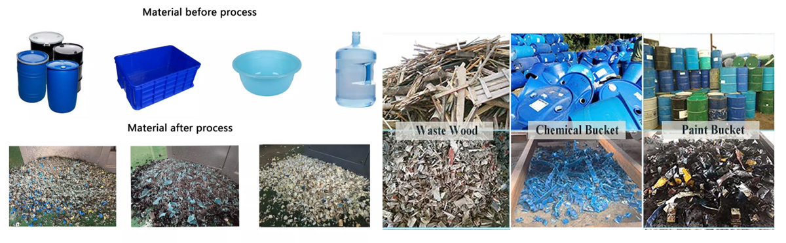

Plastic Recycling Double Shaft Shredder
Break down bulky plastic parts with two shredding shafts.
Inquire about this product Prepare a detailed project brief
Equipment overview
The double shaft plastic shredder machine is especially suitable for the crushing of those very-large and ultra-thick objects.(such as tyres, supporting boards, packing barrels, which are usually difficult to break). Features: 1) The shredder have the characteristics of strong crushing ability, low noise, environmental- friendly. 2) The motor connected with the shaft directly, it can avoid belt slipping and avoid the easy wear part broken. 3) Compact structure. The motor is directly connected to the shaft roller, wshich can avoid slipping and spare parts broken. 4) The spare parts are made of high manganese steel which is of high reistance. Working Principle: The materials are fed into through feed inlet. With a high speed of rotation, the blade knifes could peel and cut the materials. And then the materials are sent out through high speed steam-flow produced by fan blade in the knife plate. This type of shredder with functions of start, stop, reverse, overload reverse automatically, with feature return and overload returns automatically, with characteristics of big torque in low speed and low noise.
Technical specifications
Reference configurations from the product catalogue. Confirm output, dimensions and equipment selection for your material and project.
| Model | Powder | Capacity | Weight | Dimension |
|---|---|---|---|---|
| HD-600 | 4-15*2KW | 2-3T/H | 2.5T | 2.6*2*1.9MM |
| HD-800 | 4-22*2KW | 3-5T/H | 3.6T | 2.8*2*1.9MM |
| HD-1000 | 4-45*2KW | 6-10T/H | 9.5T | 3.2*2*1.9MM |
| HD-1200 | 4-55*2KW | 8-12T/H | 18T | 4.3*2*2.4MM |
| HD-1400 | 4-75*2KW | 12-18T/H | 24T | 5*3*2.4MM |
| HD-1600 | 4-132*2KW | 20-26T/H | 62T | 7*4*4.5MM |
Detailed Images
Application
We are specialized manufacturers from China, Reconditioned Plastic Machines, plastic crusher and shredder Mixers suppliers/factory, wholesale high-quality products of crusher and shredder R & D and manufacturing, we have the perfect after-sales service and technical support. Look forward to your cooperation!

Equipment video
Ask about this machine
Plastic Recycling Double Shaft Shredder